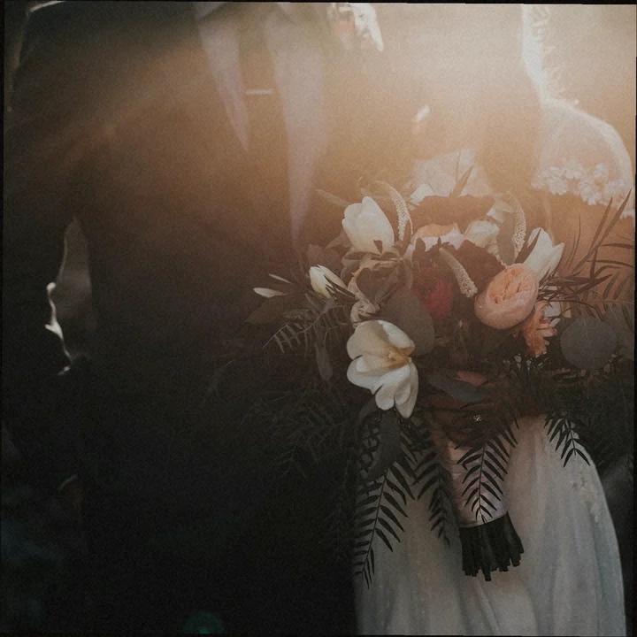
07A1Mara Ellison — contact · roll 07
▲ KODAK · PORTRA 400 · ROLL 07A→ → →07A1–07A5
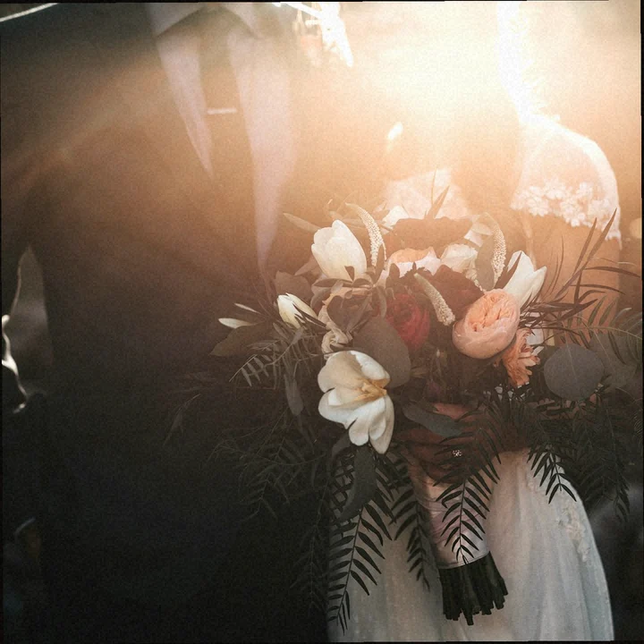
07A2
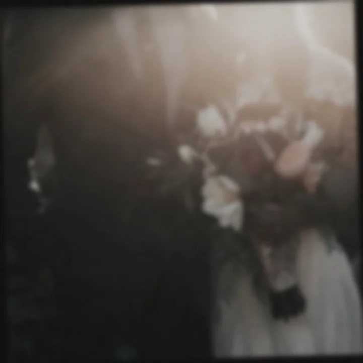
07A3
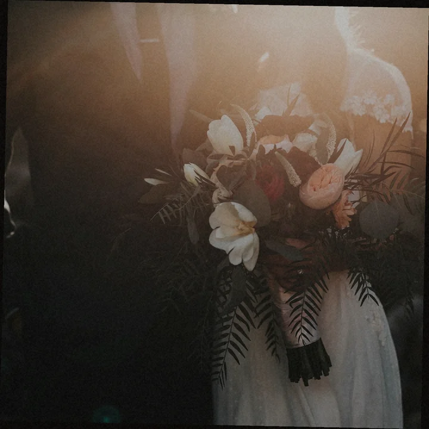
07A4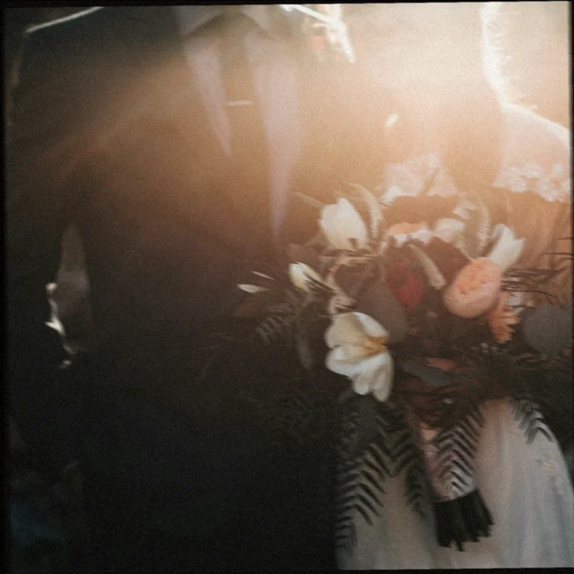
07A5
▲ KODAK · PORTRA 400 · ROLL 07B→ → →07B1–07B5
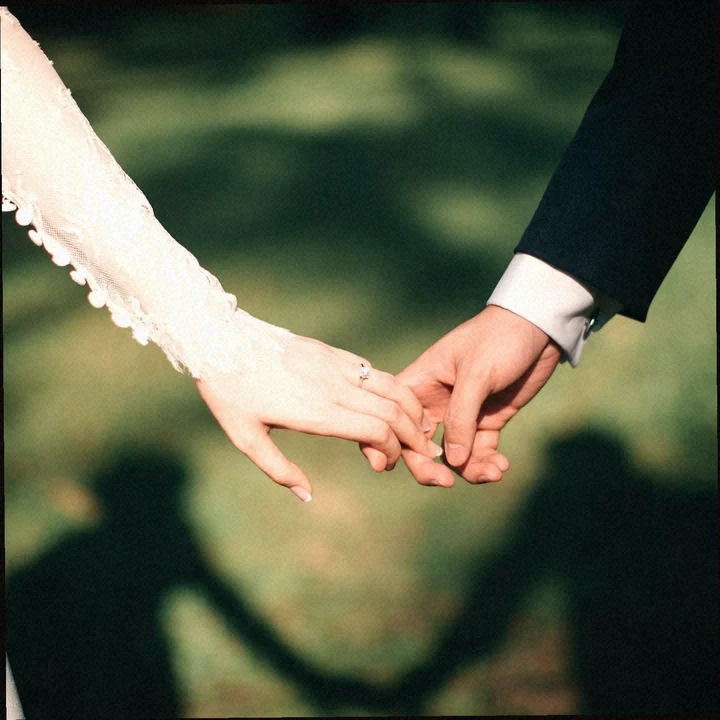
07B1

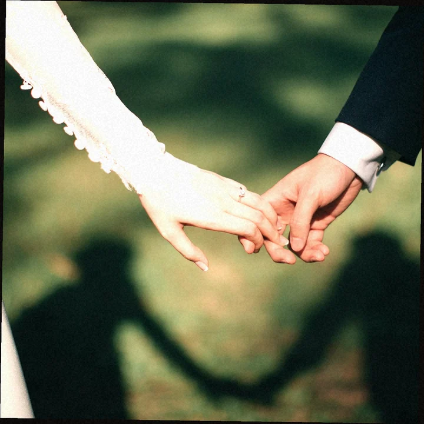
07B2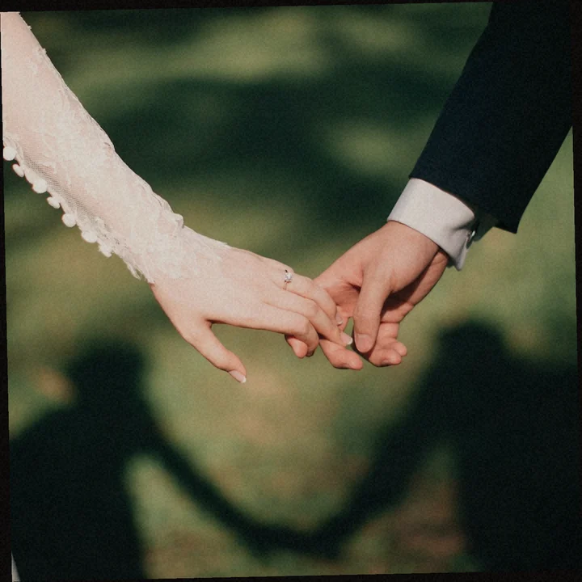
07B3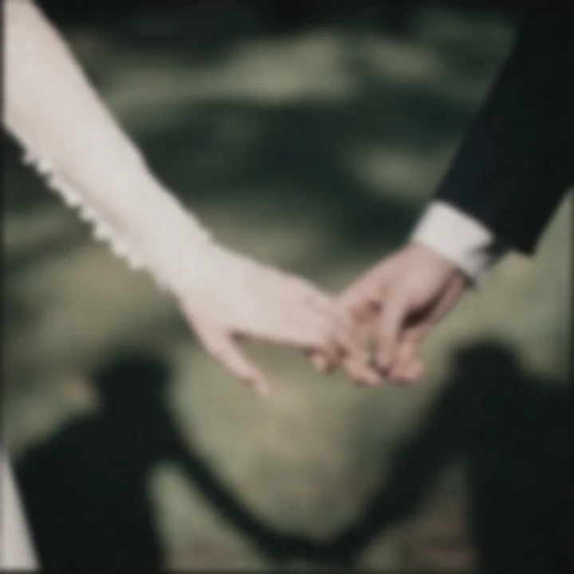
07B4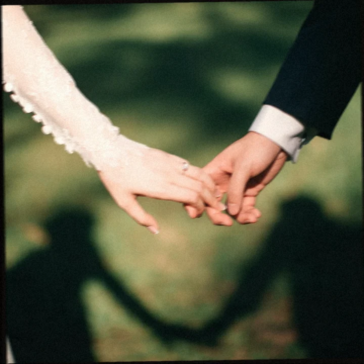
07B5▲ KODAK · PORTRA 400 · ROLL 07C→ → →07C1–07C5
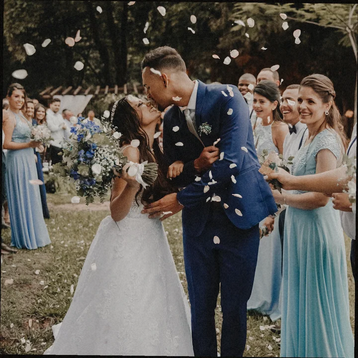
07C1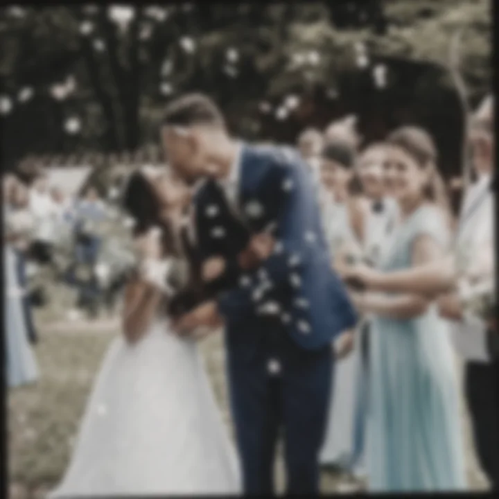
07C2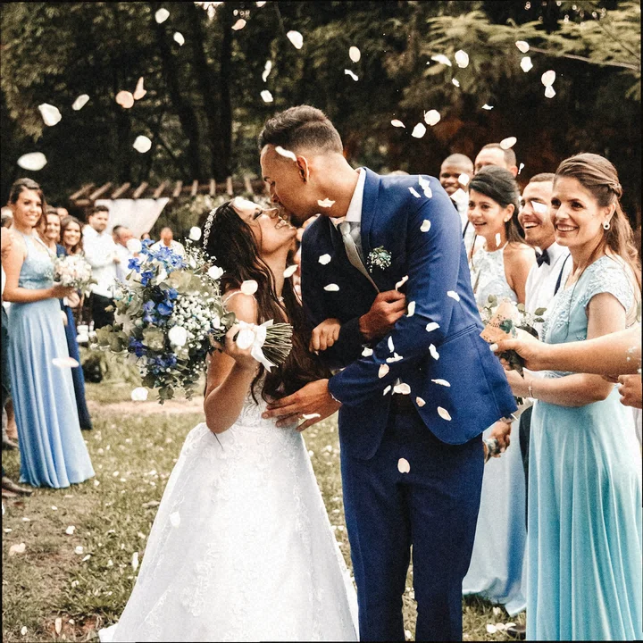
07C3
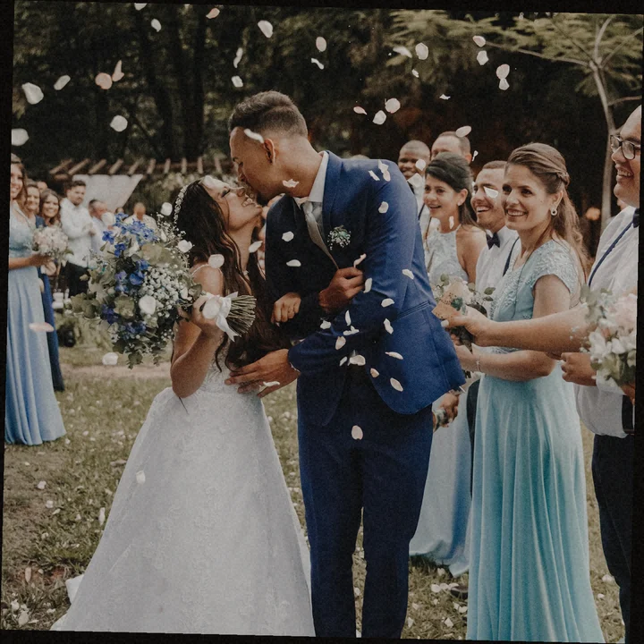
07C4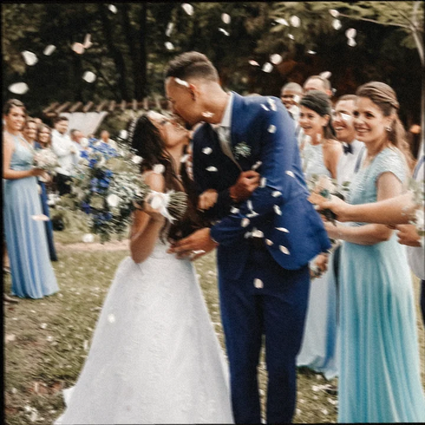
07C5Pull strip · roll 07A
▲ KODAK · PORTRA 400 · ROLL 07A · 07A1–07A5 · → → →
Keep 07A2 · inline
Pull strip · roll 07B
▲ KODAK · PORTRA 400 · ROLL 07B · 07B1–07B5 · → → →
Keep 07B1 · inline
Pull strip · roll 07C
▲ KODAK · PORTRA 400 · ROLL 07C · 07C1–07C5 · → → →
Keep 07C3 · inline
Not a shortlist
Grease pencil is a decision, not a heart. Keeps: 07A2 · 07B1 · 07C3. No packages. No phone. Location-neutral. Mara Ellison is fictional — Solved Tech example.